How to use the ODM
Dictionary v3.0.0 Documentation v2.1.0
How-To guides
1) How to use templates
ODM Excel report templates provide you with an easy way to enter your wastewater and other environmental data into the relevant PHES-ODM tables (more information about the tables can be found in the getting-to-know and tables sections). The templates also serve as an interactive way to get to know the ODM and can be found at the OSF.io PHES-ODM reference file folder.
The guides below will walk you through each of the report templates. In these guides, “field” refers to a column in the template, and “entry” refers to a row of information that you entered. The guides also provide definitions and explanations for some terms; more complete information can be found in the Reference Guide - Parts document. If you have any questions or comments, you can post them on our Discourse forum.
As a starting point:
Sample report tableandMeasure report tableare used for day-to-day reporting. You can record information about a sample in theSample report table. Measures (or measurements) are recorded in theMeasure report table. A measure is “measurement or observation of any substance including a biological, physical or chemical substance”.There are four optional tables that support the reporting of samples and measures:
Sample relationships tableis used only when you have samples that are pooled or split.Measure set report tablecan be used to link measures together.Quality reports tableis used for detailed quality assurance and control reporting (you can, and should, record a quality flag attribute for each measure or sample in theMeasure report tableandSample report table).Public health actions report tableis for recording information on public health actions that are related to a given measure; whether a measure led to increased surveillance, or increased surveillance led to the measure is not made clear. The causality is specifically left ambiguous, but it illustrates the material connection between surveillance and action.
Typically, there is a one time initial setup where you will need to enter information into the
Sites table,Address table,Organization table, andContact table.Sites tableis mandatory and records information about where testing is performed.Address table,Organization table, andContact tableoptionally provide additional context, metadata, and contact information for sites and entities such as laboratories.
There are other optional supporting tables, such as
Protocols tableandInstrument table, where you can use the templates to record information about how samples are taken and how measures are reported. TheCalculations tablealso helps in this regard, as it is where you can store information on the calculations or data treatments used to generate certain measurement values. You only need to compete these tables once and then update them as needed.
- `Protocol steps table` and `Protocol relationships table` are used alongside the `Protocols table`. - Other supporting tables include
Polygon table, which stores information about the sample shed, andPolygon relationships table, which describes relationships (such as overlap, co-location) of sample shed or other polygon areas.Dataset table, which stores information about the data custodian and owner of the data, andAccessions table, which stores linkages to external databases for things like sequencing data, help ensure that data is correctly linked and cited.
The templates contain four main types of fields; in these how-to guides they are colour-coded for instructional purposes:
Identifier and unique identifier (red): In these fields you will create a value that will be used to identify something. For instance,
Sample IDis used to identify each unique sample. An identifier can be repeated between entries, while an unique identifier cannot. There is usually only one unique identifier per template sheet, and they correspond to the name of the template. For example,Measure Report IDfor theMeasure report tabletemplate, andContact IDfor theContact tabletemplate.Drop-down and conditional drop-down menus (green): These fields have a drop-down menu which contain the values that you can either select or type in. In conditional drop-down menus, the values may depend on what you entered in a previous field.
Date fields (purple): Dates are entered in these fields and must be in the form of the ISO 8601 format:
yyyy-mm-dd. All datetime fields also support entries for hours, minutes, and seconds:2022-01-01T06:11:54and2022-01-01T06:11:54+13:30Free form fields (blue): In these fields, you can enter your data in any format that you wish. Any restrictions will be specified in the relevant sections. Keep in mind, different measures may have different data types that cannot be validated in Excel. The data type of a measure can be checked in the reference list for the measure. For example, the data type for Sample temperature is a real number.
2) How to report Measures and Measure sets
In this guide you will learn how to record data in the Measure report table (or measures Excel tab) and the Measure set report table (or measureSets tab) templates. In the Measure report table template, each row represents a measure. Along the same lines, in the Measure set report template, each entry represents a collection or set of measures.
You can find additional information regarding terms and the colour-coding of columns at the beginning of this document (How-To guides) and the Reference Guide - Parts document.
Quick Start
Below you will find the mandatory fields for the Measure report table and Measure set report table templates. You will also find definitions of these fields and examples of entries of data. A more detailed description of some of the key concepts can be found in the following section, Detailed description.
Measure report table template
- Mandatory fields
Measure report ID: Unique identifier for theMeasure report tabletemplate. Each value represents a measure.Sample ID: Identifier for the sample that is associated with each measure.Site ID: Identifier for the location where a sample was taken.Analysis Date End: Date the measure was completed.Specimen: Substance or thing upon which the observation was made. Specimens includePopulation,Sample, andSite. This field is only mandatory if there is more than one specimen type that is collected in the dataset.Fraction analyzed: the fraction or portion of the wastewater that was analyzed (for example “liquid”, “solid”, “mixed”).Measure: A measurement or observation of any substance including a biological, physical or chemical substances.Value: Value of the measure.Unit: Units of a value.Aggregation: Statistical measure that the measure represents (for example “mean”, “single”).
- Examples
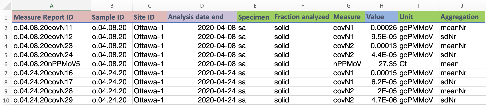
this example data is pulled from open data sources using the ODM at the Ontario Wastewater Surveillance ConsortiumMeasure Sets Template
- Mandatory fields
Measure Report set ID: Unique identifier for theMeasure set reporttemplate. Each value represents a group of related measures.
note: the reason that the ID is the only mandatory field is because the value is referenced as a foreign key in the Measure report table, and as such the linkage can be found in that table rather than this one.
- Examples
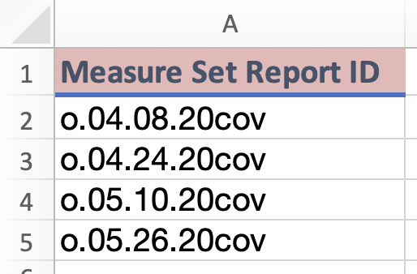
this example data is pulled from open data sources using the ODM at the Ontario Wastewater Surveillance Consortium- Full example
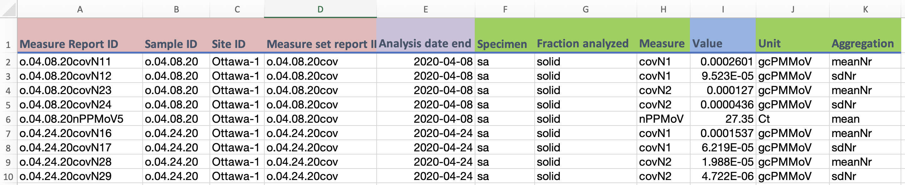
The above examples takes the previous example table, and adds the Measure set report ID column, to organize grouped measures together. In this case, mean and standard deviation measures of the SARS-CoV-2 N1 and N2 gene regions, and the PMMoV fecal biomarker standard, all from the same samples. The most basic Measure set report table would look the same as in the example at point 3 above, but optionally could include additional metadata about the set.
this example data is pulled from open data sources using the ODM at the Ontario Wastewater Surveillance Consortium
Detailed description
Measures template
- Columns A to I
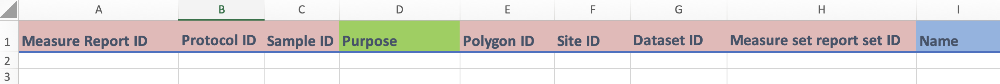
i) Columns A-C, and E-H
- These are identifier fields.
- `Measure Report ID` (column A) is the unique identifier for this template, and it cannot be repeated. You can think of each `Measure Report ID` as representing a unique measure. The field can be any combination of letters or words up to 30 characters.
- You can repeat the other fields between entries (if needed). For instance, if you enter two different measures from the same sample, then the `Sample ID` (column C) will be the same.
- You may have already created these identifiers in another template. For instance, you may have created `Sample ID` in the `Sample report table` template.
ii) Column D
- `Purpose` has a drop-down menu. If you are unsure what to put, select `Regular` for regular pathogen surveillance. For more information on the different possible categories for purpose, please refer to [purposeSet](https://docs.phes-odm.org/sets.html#purposeSet).
iii) Column I
- `Name` is a free text and optional field for providing a general name for a measure. This can be repeated as well for internal tracking of measures.- Columns J to P
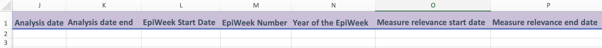
i) Columns J to P
- These are date fields where you can enter the dates associated with your measure in the format yyyy-mm-dd. Including hours and minutes is optional, but all date-entries in columns J, K, L, and P use the ISO 8601 format. `2022-01-01T06:11:54` or `2022-01-01T06:11:54+13:30`
ii) Columns M and N
- M records the epi week of a measurement. Epi weeks are a way of standardizing time throughout the year by numbering the weeks, so the entry for this "date" field will be a whole number between 1 and 52. Similarly, N specifies the year that epi week belongs too, so only the year is recorded.
iii) Columns O and P
- These measure relevance date fields were added in version 3.0.0 to better contextualize site specific or census-style data. For measures like population counts, for example, which may have time constraints on their validity. Fields in ODM can be editted at a later date and then the `Last editted` field (column AI) can be updated, but for items like population counts, they should not be overwritten because having the population from the time of the measure may be important for using and contextualizing the other measurement data. Hence, the validity date range fields.- Columns Q to AA
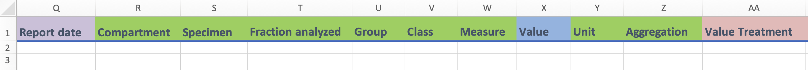
i) Columns R, S, and T
- `Compartment`, `Specimen` and `Fraction analyzed` have drop-down menus. In general these fields are optional, but are recommended (see next point for the exception).
- `Compartment` is only truly necessary to report if you are reporting measures from different compartments. If all your samples are wastwater (or just water) it becomes excessively repetitive to report it on each row.
- `Specimen` is mandatory when the ensemble of data you are entering has more than one type of specimen. If you are recordig both sample and site measures, for example, this needs to be made explicit.
- `Fraction analyzed` applies only for water and wastewater samples. You should record the fraction for all samples if the compartment type is water or wastewater.
- Of note is that if you generate wide names, these three fields are all mandatory parts to include in a wide name.
ii) Columns U and V
- `Group` and `Class` help organize the `Measure` field by making specific measures easier to find (see the example in the next section). Both fields have a drop-down menu and are optional.
- Leave these fields **blank** if you do not use them.
iii) Column W
- `Measure` is where you select what is being measured. A measure in ODM is a "measurement or observation of any substance including a biological, physical or chemical substance".
iv) Column X
- `Value` is where you enter the value of your measure. For instance, if you recorded an `Environmental temperature` of 20 ^o^C, you would enter "20".
- Note: While the value you enter into this field can be of any data type, each measure is associated with a specific one. Data types for each measure can be found in the reference documentation. For example, the data type for `Environmental temperature` can be found [here](parts.qmd#airTemp).
v) Column Y
- `Unit` is where you enter the unit of your measure.
vi) Column Z
- `Aggregations` is where you enter the aggregation of your value using a drop-down menu. For instance, does your value represent a mean, median, etc.
vii) Columnn AA
- `Value treatment` is a dropdown menu option that acts as a flag to describe what kind of data is being reported, ie. raw data, estimates, etc. For more information, please refer to ([valTreatSet](https://docs.phes-odm.org/sets.html#valTreatSet).- Columns AB to AK
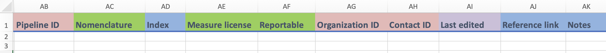
i) Columns AB, AC, and AD
- AB is an identifier field used for connecting to detailed calculations or data treatment details in the `Calculations table`, while AC contains drop-down menus, and AD is a free text field.
- `Nomenclature` is used when reporting a variant or disease to specify which naming convention (nomenclature) was used, to ensure that it can be matched up with the same measure reported under different naming conventions.
- `Index` (column AD) is used if you have multiple entries with the same values in most of the other fields; an example is when you make replicates of measures. If this is the case you can enter "1", "2", etc. in this field to differentiate them.
ii) Column AE and AF
- These are fields which contain drop-down menus.
- `Measure license` (column V) refers to the access and use licensing of the measure that you are entering. For a full list of current license categories, please see [licSet](https://docs.phes-odm.org/sets.html#licSet).
- `Reportable` (column W) is where you can indicate if the measure should not be used for regular reporting due to quality concerns. It takes a `TRUE` or `FALSE` value. You can record more details of the quality concerns in the `Quality reports table` template.
iii) Column AG and AH
- These are identifier fields that are used to indicate the organization and contact person associated with the entry.
iv) Column AI, AJ, and AK
- `Last edited` is where you can indicate the date when the entry was last updated. This field is used when you modify an entry after your initial recording. Leave this field blank if the entry was entered with no updates.
- `Reference link` is used to point out to an external reference for a single measure, if needed.
- `Notes` is free text field for recording any additional details that users may feel are important to include.Measure set report template
- Columns A to G
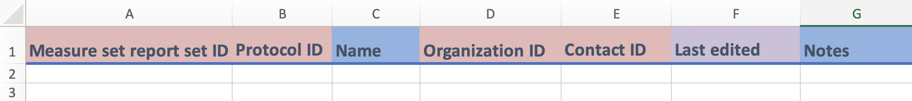
i) Columns A, B, D and E
- These are identifier fields.
- `Measure set report set ID` (column A) is the unique identifier for this template, and cannot be repeated between entries. In essence, each value of `Measure set report set ID` represents a unique measure set. This field can be any combination of letters or words up to 30 characters.
- For the rest, you can repeat the identifier between entries (if needed). For instance, if you are entering two different measure sets that came from the same organization, then the `Organization ID` (column D) will be the same.
- You may have already created these identifiers in another template. For instance you may have created `Organization ID` in the `Organization table` template.
ii) Columns C and G
- These are free form fields in which you can enter the indicated information. `Name` (column C) refers to the name that you have given to the measure set.
iii) Column F
- `Last edited` is a date field in which you can enter the date when the entry was last updated. This field is used when you modify an entry after your initial recording. Leave this field blank if the entry was entered with no updates.You have now entered your data in the Measure report and Measure set report templates, congratulations!
3) How to report samples and sample relationships:
In this guide you will learn how to enter information about samples and sample relationships into their respective templates. In the Sample report table (or samples tab) template, each entry represents a sample. A sample is the wastewater that you collected so that measures can be made - but it may also be a sample from a surface, from air, or other environmental material. Along the same lines, each entry in the Sample relationships table (or the sampleRelationships tab) template represents an interaction (or relationship) between two samples in the form “subject - relationship - object”. So, to specify that Sample A is a field sample replicate of Sample B, you would enter Sample ID of A - Field sample replicate - Sample ID of B.
You can find additional information regarding terms and the colour-coding of columns at the beginning of this document (How-To guides) and the Reference Guide - Parts document.
Quick Start
Below you will find the fields that are mandatory for the Sample report and Sample relationships templates. You will also find definitions of these fields and examples of entries of data. A more detailed description of some of the key concepts can be found in the following section, Detailed Description.
Samples Template
- Mandatory fields
Sample ID: Unique identifier for theSample reporttemplate. Each value represents a sample.Site ID: Identifier for the location where a sample was taken.Sample material: Type of material that the sample is made of.Sample collection type: Method used to collect the sample.Collection period: The time period over which the sample was collected, in hours.Collection number: The number of subsamples that were combined to create the sample. Use NA for continuous, proportional or passive sampling.Collection date time: The date, time and time zone the sample was taken.
- Examples
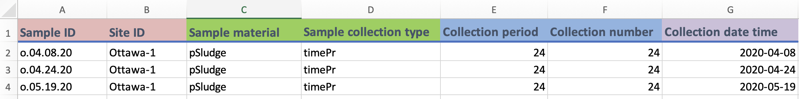
this example data is pulled from open data sources using the ODM at the Ontario Wastewater Surveillance Consortium
Sample Relationships Template
- Mandatory fields
Synthetic ID for the sampleRelationships table: A unique identifier for each row of the
Sample relationships table. Can be any combination of characters, as long as there are fewer than 30.Sample ID object: The object (or one of the samples) of a relationship between two samples. This will always be aSample IDthat was previously created in theSample reporttemplate.Relationship: Describes the relationship between two samples. For the list of possible relationships, please refer to sampleRelSet.Sample ID subject: The subject (or one of the samples) of a relationship between two samples. This will always be aSample IDthat was previously created in theSample reporttemplate.
- Examples
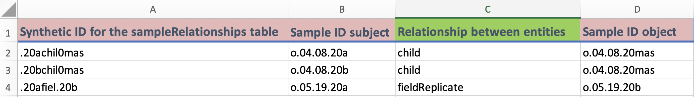
Detailed Description
Sample report table template
Columns A to J
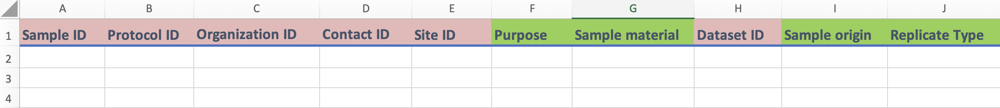
i) Columns A to E, and H:
- These are identifier fields.
- `Sample ID` (column A) is the unique identifier for this template and cannot be repeated between entries. You can think of each `Sample ID` value as representing a unique sample. This field can be any combination of letters, numbers, or words up to 30 characters.
- For the rest of the fields, you can repeat values between entries. For instance, if you are entering two different samples from the same site, then the `Site ID` (column E) will be the same.
- The sample logic applies for sampling protocols (`Protocol ID`), for the individual or organization collecting the sample (`Organization ID` and `Contact ID`), and the dataset the data is found in (`Dataset ID`).
- You may have already created these identifiers in another template. For instance you may have created `Site ID` in the `Sites table` template.
ii) Columns F to G:
- These are fields that contain drop-down menus where you can enter information regarding the `Purpose` (column F, [purposeSet](https://docs.phes-odm.org/sets.html#purposeSet)) and `Sample material` (column G, [sampleMatSet](https://docs.phes-odm.org/sets.html#sampleMatSet)) of your sample.
ii) Columns I to J:
- These are fields that contain drop-down menus where you can enter information regarding the `Sample origin` (column I, [originSet](https://docs.phes-odm.org/sets.html#originSet)) and the `Replicate type` (column J, [replicateSet](https://docs.phes-odm.org/sets.html#replicateSet)) of your sample.
- Columns K to Q
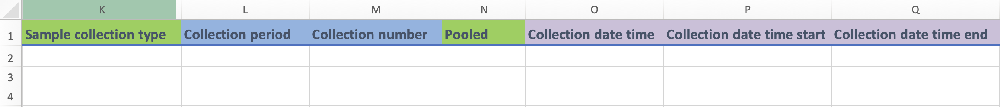
i) Columns K, N:
- These fields contain drop-down menus and are related to various characteristics of your sample.
- `Sample collection type` (column K, [collectSet](https://docs.phes-odm.org/sets.html#collectSet)) refers to the collection technique you used to obtain the sample.
- `Pooled` (column O, [booleanSet](https://docs.phes-odm.org/sets.html#booleanSet)) refers to whether or not the sample that you are entering is made up of multiple parent samples; a combination of multiple samples.
ii) Columns L to M:
- These are free form fields.
- `Collection period` (column L) refers to the number of hours that you took to collect the sample. Please note that this is one field in the ODM where the units are implied, and **must be recorded in hours**.
- `Collection number` (column M) refers to the number of subsamples that were used to create Sample that you are entering. For grab samples this value will always just be 1.
iii) Columns O to Q:
- These fields are datetime fields to record details about when exactly a sample was collected. These dates will be in the format yyyy-mm-dd. Including hours and minutes is optional, but all date-entries use the ISO 8601 format. `2022-01-01T06:11:54` or `2022-01-01T06:11:54+13:30.`
- For single collection or grab samples, users can use `Collection date time` (Column O) to record the date and time of colelction.
- For composite or agragated samples, users can use `Colelction date time start` (Column P) to record the date and time that sample collection was begun, and `Colelction date time end` (Column Q) to record when the collection was halted.
- Columns R to V
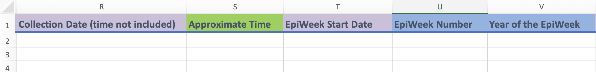
i) Columns R and T:
- These are optional date fields that are related to your sample. These dates will be in the format yyyy-mm-dd. Including hours and minutes is optional, but all date-entries use the ISO 8601 format. `2022-01-01T06:11:54` or `2022-01-01T06:11:54+13:30.`
- `Collection Date (time not included)` (Column R) is where you can enter the date of collection when time wasn't recorded. THis is an optional field because it records less data, but is a good option for programs where detailed time stamps may be unfeasible - including for composite samples.
- `EpiWeek Start Date` (Column T) is an optional date field used when recording [epiWeeks](https://epiweeks.readthedocs.io/en/stable/background.html) (columns U and V). This specifies the start date of the EpiWeek to avoid confusion due to differences in USCDC and ISO8601 reporting standards.
ii) Column S:
- `Approximate Time` (column S) is an optional time field when using `Collection Date (time not included)`. If users did have some information about time, this is a categorical drop down field to report approximate times of day in which the sample was collected. For information on these categories, please see [collAppxSet](https://docs.phes-odm.org/sets.html#collAppxSet).
iii) Columns U and V:
- These are optional free-text fields to be used as accessories to a date field.
- `EpiWeek Number` (collumn U) specifies the number of the EpiWeek (between 1 and 52 or 53) of sample collection.
- `Year of the EpiWeek` (column V) specifies the year of the epiWeek.
- In order for epiWeek information to be useful, **all three pieces (`EpiWeek Start Date`, column T; `EpiWeek Number`, collumn U; and `Year of the EpiWeek`, column V) must be present and recorded**.- Columns W to AA
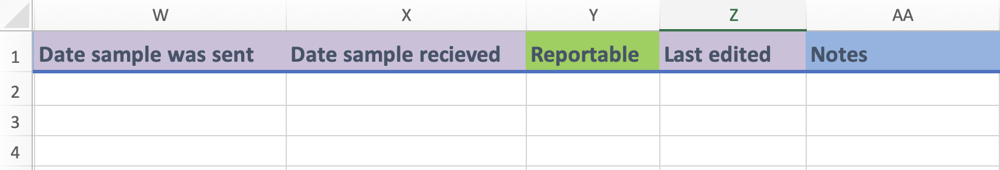
i) Columns W, X, and Z:
- These fields are datetime fields to record details about when exactly a sample was sent from the collection point to the lab, and when it was recieved in the analysis lab. These dates will be in the format yyyy-mm-dd. Including hours and minutes is optional, but all date-entries use the ISO 8601 format. `2022-01-01T06:11:54` or `2022-01-01T06:11:54+13:30.`
- `Date sample was sent` (column W) records when a sample leaves the collection point and is sent to the lab for analysis. `Date sample recieved` (Column X) records when that sample then arrives in the lab for analysis. These two fields, when combined with `Collection date time` and `Analysis date time start` (from the `Measure report table`), give a complete timeline from collection to analysis. This helps provide contextual metadata for how long samples are sitting, and any implications that may have on the measurement results.
- `Last edited` ( Column Z) is where you can enter the date when the entry was last updated. This field is used when you modify an entry after your initial recording. Leave this field blank if the entry was entered with no updates.
ii) Columns Y and AA:
- `Reportable` (column U, [booleanSet](https://docs.phes-odm.org/sets.html#booleanSet)) is a drop-down menu field where you can indicate if the sample should not be used for regular reporting due to quality concerns. You can record more details of the quality concerns in the `Quality reports` table.
- `Notes` (column W) is a free form field where you can indicate anything of interest.
Sample relationships template
- Columns A to F
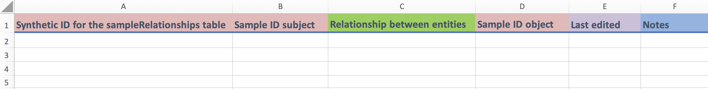
i) Columns A, B, and D:
- These are identifier fields.
- `Synthetic ID for the sampleRelationships table` is a unique identifier for each row in the "Sample relationships table`, and they cannot be repeated. This operates as the primary key for this table.
- Both of the identifiers for subject (Column B) and object (Column D) are `Sample ID` values and represent samples. You would have created them previously in the `Sample report` template. Neither of them are unique identifiers and, thus, can be repeated between entries.
ii) Columns B:
- `Relationship` (Column C, [sampleRelSet](https://docs.phes-odm.org/sets.html#sampleRelSet) is a drop-down menu field where you can select the type of relationship between two samples. For instance, if Sample B was a child of Sample A, you would put the `Sample ID` of Sample A in the `Sample ID subject` field (column B), and the `Sample ID` of Sample B in `Sample ID object` field (column D). Then you would chose `Child relationship` from the menu in this column.
iii) Columns E and F:
- These are a date field (column E) and a free form field (column F) where you can enter in the indicated information.
- `Last edited` (column E) is where you can enter in the date when the entry was last updated. This field is used when you modify an entry after your initial recording. Leave this field blank if the entry was entered with no updates.
- `Notes` (column F) is a free form field where you can indicate anything of interest.
You have now entered your data in the Sample report and Sample relationships templates, congratulations!
4) How to record a protocol
In this guide you will learn how to enter protocols, protocol steps and protocol relationships into their respective templates. A protocol is “A procedure for collecting a sample or performing a measure”. Each entry in the Protocols table (or protocols) template represents a unique protocol. A protocol is made up of protocol steps. In the Protocol steps table (or protocolSteps) template, each entry is one of these steps. Finally, protocols and protocol steps can be linked to each other. Each entry in the Protocol relationships (or protocolRelationships) template represents one of these relationships in the form, “subject - relationship - object”. So, for example, if you want to specify that Protocol step A needs to be done before Protocol step B, you would enter the Protocol step ID of A - Is Before - Protocol Step ID of B.
You can find additional information regarding terms and the colour-coding of columns at the beginning of this guide (How-To guides) and the Reference Guide - Parts document.
Quick Start
Below you will find the fields that are mandatory for the Protocols, Protocol steps and Protocol relationships templates. You will also find definitions of these fields and examples of entries of data. A more detailed description of some of the key concepts can be found in the following section, Detailed Description.
Protocol steps template
- Mandatory fields
Protocol Step ID: The unique identifier for theprotocol stepstemplate. Each value represents a protocol step.Measure: A measurement or observation of any substance including a biological, physical or chemical substance.Method: A procedure for collecting a sample or performing a measure.Value: Value of the entry. This is only mandatory if the entry is a measure.Unit: The units of the value. This is only mandatory if the entry is a measure.Aggregation: Statistical measures used to report a measure (for example, “mean”). This is only mandatory if the entry is a measure.
- Examples
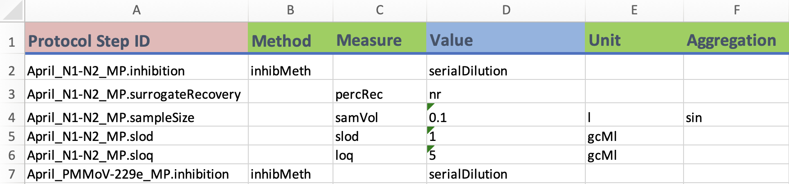
this example data is pulled from open data sources using the ODM at the Ontario Wastewater Surveillance Consortium
Protocols template
- Mandatory fields
Protocol ID: The unique identifier for theProtocolstemplate. Each value represents a protocol.
- Examples
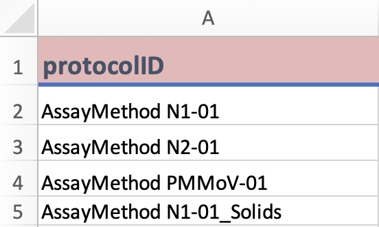
this example data is pulled from open data sources using the ODM at the Ontario Wastewater Surveillance ConsortiumProtocol relationships template
- Mandatory fields
Synthetic ID for the protocolRelationships table: A unique identifier for each row of theProtocol relationships table. Can be any combination of characters, as long as there are fewer than 30.Protocol ID container: The unique identifier for theProtocol relationshipstemplate. Each value represents a protocol, and the step(s) and other protocol(s) that make it up. This identifier should also be aProtocol IDthat was created using theProtocolstemplate.Protocol ID object: Identifier of the object of a relationship between a protocol, and a protocol step or protocol. This is only mandatory if the object is a protocol.Step ID Object: Identifier of the object of a relationship between a protocol step, and a protocol step or protocol. This is only mandatory if the object is a protocol step.Relationship between entities: Describes the relationship between the subject and object.Protocol ID subject: Identifier of the subject of a relationship between a protocol, and a protocol step or protocol. This is only mandatory is the subject is a protocol.Step ID Subject: Identifier of the subject of a relationship between a protocol step, and a protocol step or protocol. This is only mandatory is the subject is a protocol step.
- Examples
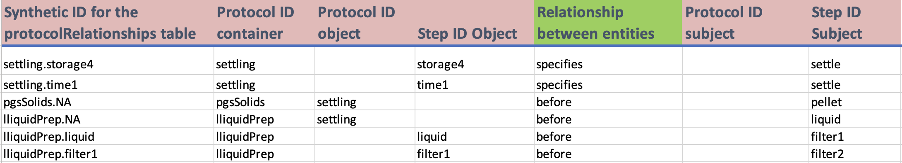
this example data is pulled from open data sources using the ODM at the Ontario Wastewater Surveillance ConsortiumDetailed Description
Protocol steps template
- Columns A to G
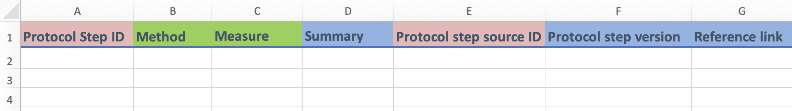
i) Column A and E:
- These are identifier fields.
- `Protocol step ID` (column A) is the unique identifier field for this template and cannot be repeated between entries. You can think of each `Protocol Step ID` value as representing a unique protocol step. This field can be any combination of letters or words up to 30 characters.
- `Protocol step source` (column E) specifies the protocol step that you used as a basis for the given protocol step (it will be a previous `Protocol step ID`).
ii) Columns B to C:
- These are fields with drop-down menus.
- You only need to enter a value into `Method` (column B) *or* `Measure` (column C). The former is for when you are entering a method as a protocol step. The latter is when you are entering a measure as a protocol step. Leave the other field **blank**.
iii) Columns D, F and G:
- These are free form fields.
- `Summary` (column D) is a short description of the protocol step that you are entering.
- `Protocol step version` (column F) specifies the version of a given protocol step.
- `Reference link` (column G) is used to report a URL or hyperlink to where the protocol step has been described elsewhere.- Columns H to O
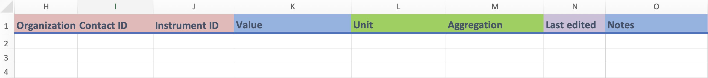
i) Columns H to J:
- These are identifier fields.
- You can repeat values between entries. For instance, if you are entering two different protocol steps from the same organization, then the `Organization ID` field (column H) will be the same.
ii) Column K:
- `Value` is a free form field where, if the protocol step is a measure, you can enter its value.
- Of note, for some measures and methods, they can take enumerated values, so this field can take categorical inputs as well.
iii) Columns L and M:
- These fields contain conditional drop-down menu fields.
- `Unit` (column L) depends on what you entered in `Measure` (column C). This field is only applicable if the protocol step is a measure.
- `Aggregation` (column M) depends on what you entered in `Unit` (column L). This field is only applicable if the protocol step is a measure.
iv) Columns N and O:
- These are a date field (column N) and a free form field (column O) where you can enter in the indicated information.
- `Last edited` (column N) is where you can enter the date when the entry was last updated. This field is used when you modify an entry after your initial recording. Leave this field blank if the measure was entered with no updates. This date will be in the format yyyy-mm-dd. Including hours and minutes is optional, but all date-entries use the ISO 8601 format. `2022-01-01T06:11:54` or `2022-01-01T06:11:54+13:30.`Protocols template
- Columns A to J
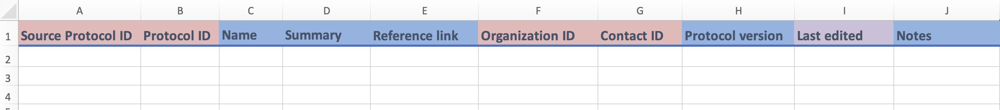
i) Columns A and B; F and G
- These are identifier fields.
- `Protocol ID` (column B) is the unique identifier for this template, and *cannot be repeated* between entries. In essence, each value of `Protocol ID` represents a unique protocol. This field can be any combination of letters or words up to 30 characters.
- `Source Protocol ID` (column A), `Organization ID` (column F), and `Contact ID` (column G) are identifier fields that can repeat values between entries.
- `Source Protocol ID` (column A) is where you can enter the `Protocol ID` of the protocol that served as the basis for the protocol that is currently being entered.
- `Organization ID` (column F) records the linked organization who created or designed the protocol.
- `Contact ID` (column G) records the ontact information for questions about the protocol.
ii) Columns C to E:
- These are free form fields in which you can enter the indicated information.
- `Name` (column D) refers to the name that you have decided to give your protocol.
- `Summary` (column D) and `Reference link` (column E) record a narrative summary or the protocol, and a URL for web details about the protocol, repectively.
iii) Columns H, J:
- These are free form fields.
- `Protocol version` (column I) is where you can indicate the version of the protocol that you are entering.
- `Notes` (column J) records any additional details about the protocol.
vi) Columns I:
- `Last edited` is a date field where you can enter the date when the entry was last updated. This field is used when you modify an entry after your initial recording. Leave this field blank if there have been no updates.Protocol relationships template
- Columns A to I
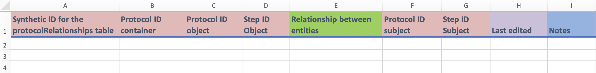
i) Columns A to D; F and G:
- These are identifier fields.
- `Synthetic ID for the protocolRelationships table` is a unique, autoincremental ID generated to produce a unique identifier and primary key for each row of the protocolRelationships table. Often by concatenating the object (column C or D), the relationship (column E), the subject (column F or G), and the row number. This identifier is not repeated.
- All the remaining identifiers (columns B to D; F and G) are either `Protocol ID` values or `Protocol Step ID` values, and represent protocols and protocol steps, respectively. This includes `Protocol ID Container` (column A), which is a `Protocol ID` that contains the relationships that you are entering in this template. Note that none of these fields are unique identifiers and, thus, they can be repeated between entries.
- You should only enter a value for one of the two `object` columns (column B and C); this depends on whether the object of the relationship that you are entering is a protocol or a protocol step. The same is true for the two `subject` columns (column E and F).
- An example will be given in point (ii) below.
ii) Column E:
- `Relationship` contains a drop-down menu; it is where you can select the type of relationship that is being entered.
- For example, pretend you wanted to enter a relationship stating that Protocol step A takes place before Protocol step B in a particular protocol container. You would enter the relevant identifiers in the `Step ID Object` field (column B) and the `Step ID subject` field (column F). You would then select `Is Before` from the `Relationship` field. Finally, to identify this relationship, you would enter in the identifier in the `Protocol ID Container` field (column A)
iii) Columns H and I:
- These are a date field (column G) and a free form field (column H) where you can enter in the indicated information.
- `Last edited` (column G) is where you can enter the date when the entry was last updated. This field is used when you modify an entry after your initial recording. Leave this field blank if the measure was entered with no updates.You have now entered your data in the Protocol steps, Protocols and Protocol relationships templates, congratulations!
5) How to report metadata
In this guide you will learn how to enter in the metadata of your wastewater data through a series of templates. Each entry in a template will usually represents what is found in the title of the template. For instance, in the Organizations template each row will represent an organization. In the context of the PHES-ODM, metadata is anything that gives general information about the data that you are entering and is not found in the templates related to measures, protocols and samples.
You can find additional information regarding terms and the colour-coding of columns at the beginning of this guide (How-To guides) and the Reference Guide - Parts document.
Quick Start
Below you will find the fields that are mandatory for the metadata-related templates. You will also find definitions of these fields and examples of entries of data. A more detailed description of some of the key concepts can be found in the following section, Detailed Description.
Accession (or accessions) template
- Mandatory fields
Accessions Index ID: The unique indentifier for each row, used to reference an external data linkage.Measure Report ID: An identifier for a measure. This is only mandatory if the entry is related to a measure.Measure Set Report ID: An identifier that links together a group of related measures. This is only mandatory if the entry is related to a measure set.Public Health Action ID: An identifier for a public health action. This is only mandatory if the entry is about a public health action.Host Data Repository or Bank: The hosting website or organization where the external data being referenced is permanently stored. This is availbale as an enumerated value.Accession Number in Repository: The unique reference code or number used for the external data being linked in the repository provided.
- Examples
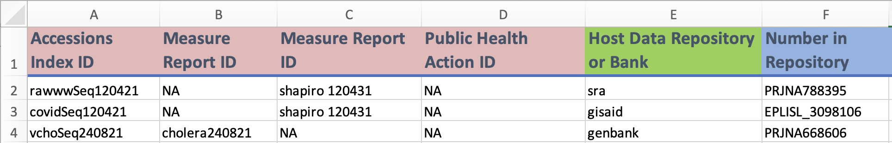
this semi-fictional example data is generated from open data generated by the Shapiro lab from the following papers: Levade, I., Khan, A. I., Chowdhury, F., Calderwood, S. B., Ryan, E. T., Harris, J. B., LaRocque, R. C., Bhuiyan, T. R., Qadri, F., Weil, A. A., & Shapiro, B. J. (2021). A combination of metagenomic and cultivation approaches reveals hypermutator pheno-types within Vibrio cholerae–infected patients. mSystems, 6(4), e00889-21. https://doi.org/10.1128/mSystems.00889-21 N’Guessan, A., Tsitouras, A., Sanchez-Quete, F., Goitom, E., Reiling, S. J., et al. (2022). Detection of prevalent SARS-CoV-2 variant lineages in wastewater and clinical sequences from cities in Québec, Canada [Preprint]. medRxiv. https://doi.org/10.1101/2022.02.01.22270170Address (or addresses) template
- Mandatory fields
Address ID: The unique identifier for theAddresstemplate. Each value represents an address.Dataset ID: The identifier of the dataset that stores information for measures, samples and other reporting tables.Address line 1: Line 1 (the street name, number and direction) for a given address of a site or organization.City: The city where a site or organization is located; part of the address.State, province or region: The state, province, or region where a site or organization is located; part of the address.Country: The country where a site or organization is located; part of the address.
- Examples
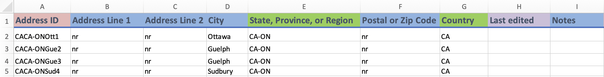
this example data is pulled from open data sources using the ODM at the Ontario Wastewater Surveillance ConsortiumContact (or contacts) template
- Mandatory fields
Contact ID: The unique identifier for theContacttemplate. Each value represents a contact person.Organization ID: An identifier for the organization to which the contact person is affiliated.Email: Contact e-mail address.
- Examples
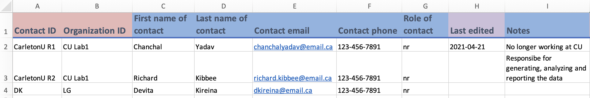
this example data is adapted from open data sources using the ODM at the Ontario Wastewater Surveillance ConsortiumCalculation (or calculations) template
- Mandatory fields
Calculation ID: A unique identifier for each row in thecalculationstable, it is typocally generated by concatenating the pipeline and treatment IDs together.Pipeline ID: A unique identifier for the data pipeline, or seuence of calculations/data treatments applied to the data.Treatment ID: A unique identifier for each treatment or step in the calcution or data pipeline that generated the reported measure.Calculation Type: An ennumerated field to explain the purpose/nature of a single calculation/data treatment.
- Examples
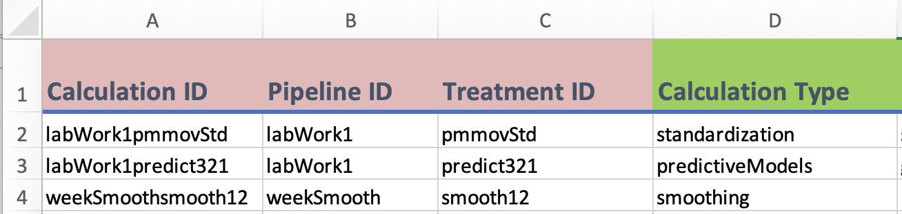
this example data is invented data intended to showcase usecases of thecalculations table.
Dataset (or datasets) template
- Mandatory fields
Dataset ID: A unique identifier for theDatasettemplate. Each value represents a dataset.License: The license of the dataset.Data custodian: The data custodian of the database. This is represented by anOrganization IDand would have been created in theOrganizationtemplate.
- Examples
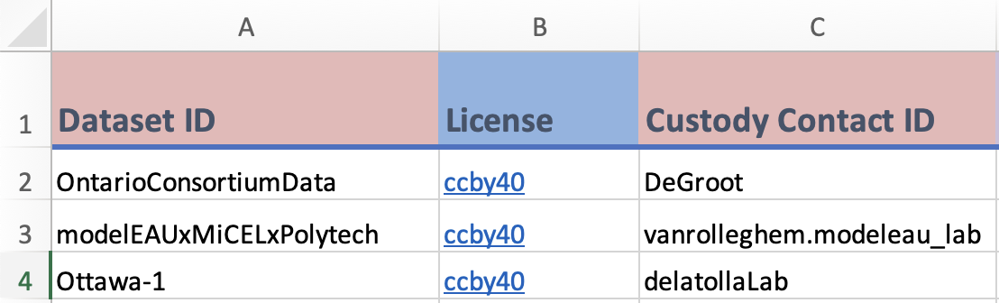
this example data is adapted from open data sources using the ODM at the Ontario Wastewater Surveillance Consortium, centrEAU, and the Delatolla LabInstrument (or instruments) Template
- Mandatory fields
Instrument ID: The unique identifier for theInstrumenttemplate. Each value represents an instrument.Model: Model number or version of the instrument.Instrument type: The type of instrument used to perform the measurement.
- Examples
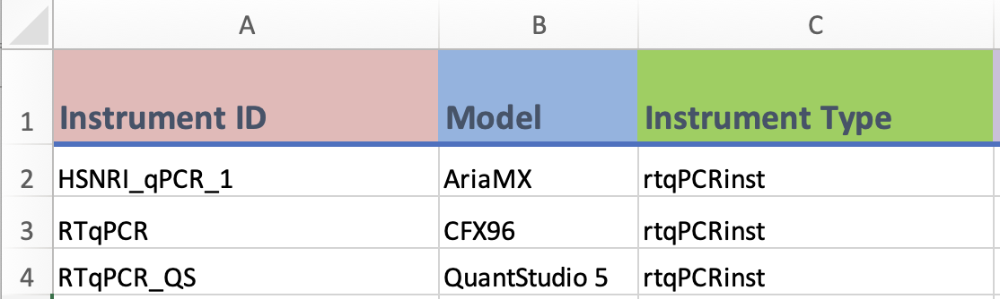
this example data is adapted from open data sources using the ODM at the Ontario Wastewater Surveillance ConsortiumOrganization (or organizations) template
- Mandatory fields
Organization ID: The unique identifier for theOrganizationtemplate. Each value represents an organization to which the reporter is affiliated.Address ID: An identifier for the address of the organization.
- Examples
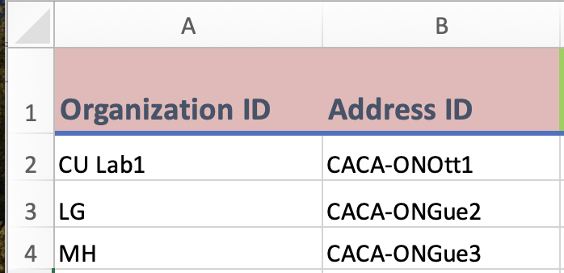
this example data is adapted from open data sources using the ODM at the Ontario Wastewater Surveillance Consortium
Polygon (or polygons) template
- Mandatory fields
Polygon ID: The unique identifier for thePolygontemplate. Each value represents a polygon.Type of geography: Type of geography that is represented by the polygon.Well-known text: Well-known text of the polygon.European Petroleum Survey Group Coordinates: A code that specifies a given geospatial area.
- Examples
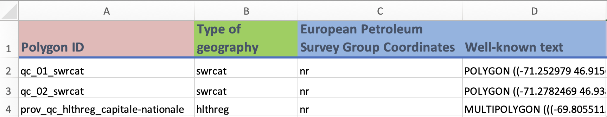
this example data is adapted from open data sources using the ODM at centrEAUPolygon Relationship (or polygonRelationships) template
- Mandatory fields
Polygon Relationship ID: A unique identifier for each row of thePolygon relationships table. Can be any combination of characters, as long as there are fewer than 30.Polygon ID Object: Identifier of the object of a relationship between polygons. Relationships are read as “polygon objectisrelationship IDofpolygon subject”.relationship IDis technically not mandatory, as simply naming the related polygon IDs implies a relationship, even without more details.Polygon ID Subject: Identifier of the subject of a relationship between polygons. Relationships are read as “polygon objectisrelationship IDofpolygon subject”.relationship IDis technically not mandatory, as simply naming the related polygon IDs implies a relationship, even without more details.
- Examples
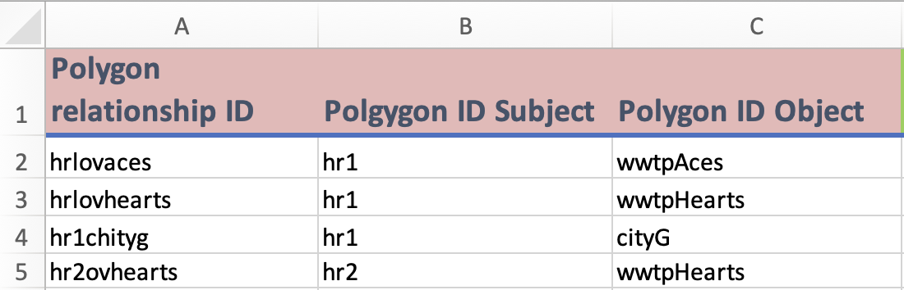
this example data is invented data intended to showcase usecases of the calculations table.
Public Health Action (or phActions) template
- Mandatory fields
Public Health Action ID: Unique identifier for public health actions, one for each row in thephActionstable.Measure Report ID: Unique identifier for a measurement linked to a public health action. This is only mandatory if the entry is related to a measure.Measure set report set ID: Unique identifier that links together a group of related measures, linked to a public health action.This is only mandatory if the entry is related to a measure set.Public health action type: The type of public health action being taken. This is only mandatory if the entry/row is not operating as an action group.
- Examples
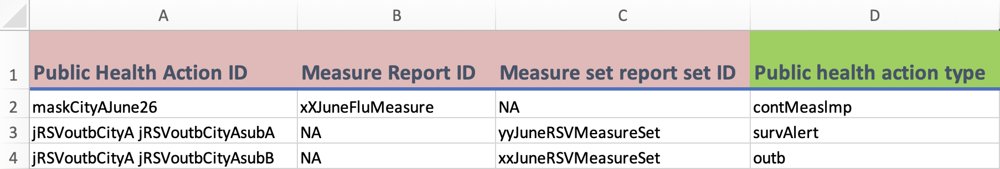
this example data is invented data intended to showcase use cases of the Public Health Actions table.
Quality reports (or qualityReports) template
- Mandatory fields
Quality report ID: The unique identifier for theQuality reportstemplate. Each value represents a quality issue that you wish to report.Measure Report ID: An identifier for a measure. This is only mandatory if the entry is about a measure.Sample ID: An identifier for a sample. This is only mandatory if the entry is about a sample.Measure Set Report ID: An identifier that links together a group of related measures. This is only mandatory if the entry is related to a measure set.Quality flag: A field for reporting any quality concerns for a sample or measure.
- Examples
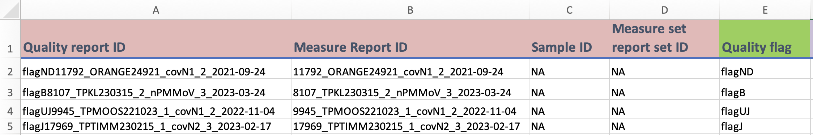
this example data is adapted from open data sources using the ODM at the Ontario Wastewater Surveillance Consortium
Sites (or sites) template
- Mandatory fields
Site ID: The unique identifier for theSitestemplate. Each value represents the site where a wastewater sample was taken.Site type: Type of site where a sample was taken.Sample shed: A geographic area, physical space, or structure. A sample is taken from a sample shed for a representative measurement of a substance.Contact ID: An identifier for a given contact person.Latitude: Latitude in decimal coordinates of the site.Latitude: Longitude in decimal coordinates of the site.European Petroleum Survey Group Coordinates: A code that specifies a given geospatial area.
- Examples
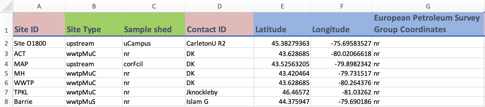
this example data is adapted from open data sources using the ODM at the Ontario Wastewater Surveillance Consortium ## Detailed Description
Accessions template
- Columns A to F
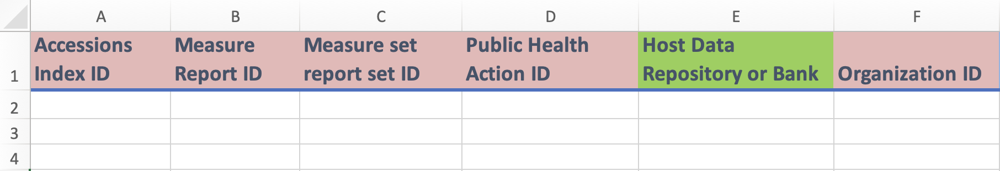
i) Columns A to D, and F:
- These are identifier fields.
- `Accessions Index ID` (column A) is the unique identifier for each row of the `accesions` table
- `Measure report ID` (column B), `Measure set report ID` (column C), and `Public Health Action ID` (column D) are unique identifiers that refer out to related measures, measure sets, *or* public health actions. Never more than one.
- `Organization ID` (column F) is an field to link the organization who made the public health action, and their information.
ii) Column E:
- `Host Data Repository or Bank` (column E) is the field for listing the name of the repository where the external data is stored (ex. GitHub, GISAID, etc.). This is a cetegirical field populated by enumerated values - see [Data Repository Set](https://docs.phes-odm.org/sets.html#dataRepoSet) for more information.- Columns G to J
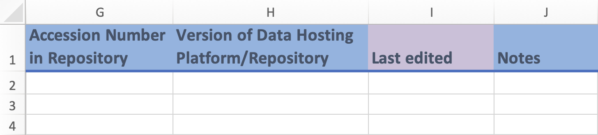
i) Columns G, H, and J:
- These are free form fields in which you can enter various information about the the specific data repository.
- `Accession number in Repository` (column G) should be the unique reference to find the data in the external reposory.
- `Version of Data Hosting Platform/Repository` (column H) sets the version of the linked repository.
- `Notes` (column J) is a free text field to record additional comments which may not belong in any other fields.
ii) Columns I:
- `Last Edited` (column I) is a date field where you can enter the date when the entry was last updated. This field is used when you modify an entry after your initial recording. Leave this field blank if the measure was entered with no updates.
Address template
- Columns A to E
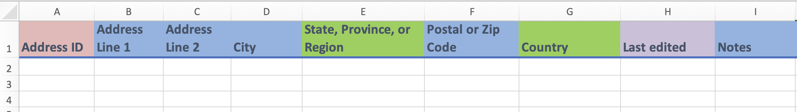
i) Columns A:
- This is the identifier field.
- `Address ID` (column A) is the unique identifier for this template, and cannot be repeated between entries. You can think of each `Address ID` value as representing a unique address. This field can be any combination of letters or words up to 30 characters.
ii) Columns B to D, and F:
- These are free form fields in which you can enter various information about the address.
- `Address Line 1` (column B) and `Address Line 2` (column C) record specific street address and unit number details, while `City` (column D) and `Postal or Zip Code` (column F) record the mailing and city data.
iii) Columns E and G:
- These are categorical fields that take predetermined ennumerated values.
- The values for `State, Province, or Region` (column E) are the ISO 3166-2 code for country sub-domainm, which can be found in the [`Zones table`](https://docs.phes-odm.org/tables.html#zones)
- The values for `Country` (column G) are the ISO 3166-1 alpha-2 country codes, which can be found in the [`Countries table`](https://docs.phes-odm.org/tables.html#countries).
iv) Columns H to I:
- `Last edited` (column H) is a date field where you can enter the date when the entry was last updated. This field is used when you modify an entry after your initial recording. Leave this field blank if the measure was entered with no updates.
- `Notes` (column I) is for any extr comments or information.Contact template
- Columns A to E
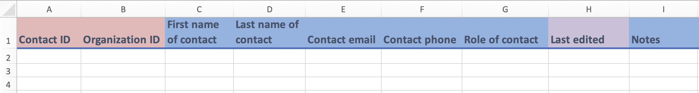
i) Columns A to B:
- These are identifier fields.
- `Contact ID` (column A) is the unique identifier for this template, and cannot be repeated between entries. You can think of each `Contact ID` value as representing a unique contact person. This field can be any combination of letters or words up to 30 characters.
- For the rest of the fields, you can repeat the values between entries (if needed). For instance, if you are entering two different contacts that came from the same organization, then the `Organization ID` (column C) will be the same.
- You may have already created these Identifiers in another template. For instance you may have created `Organization ID` in the `Organization` template.
ii) Columns C and G:
- These are free form fields in which you can enter the name(s) and various contact information of the contact.
iii) Columns H to I:
- `Last Edited` (column H) is a date field where you can enter the date when the entry was last updated. This field is used when you modify an entry after your initial recording. Leave this field blank if the measure was entered with no updates.
- `Notes` (column I) is for any extr comments or information.Calculations template
- Columns A to G
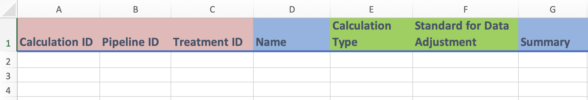
i) Columns A to C:
- These are identifier fields.
- `Calculation ID` (column A) is a unique identifier for each row in the `calculations` table, it is typocally generated by concatenating the pipeline and treatment IDs together.
- `Pipeline ID` (column B) is a unique identifier for the data pipeline, or sequence of calculations/data treatments applied to the data.
- `Treatment ID` (column C) is a unique identifier for each treatment or step in the calcution or data pipeline that generated the reported measure.
ii) Columns D and G:
- These are free-text fields.
- `Name` (column D) is a name used for a given data treatment, while `summary` (column G) is a natural language summary of the data treatment.
iii) Columns E and F:
- These are categorical or enumerated fields.
- `Calculation Type` (column E) is An ennumerated field to explain the purpose/nature of a single calculation/data treatment. To review the possible values, please see [`calculation type set`](https://docs.phes-odm.org/sets.html#calcTypeSet).
- `Standard for adjustment` (column F) is used for smoothing or standardisation calculation types, used to specify what the measure is being standardized against or smoothed with. It is populated by [`measurement` part types](https://docs.phes-odm.org/sets.html#measurements)- Columns H to M
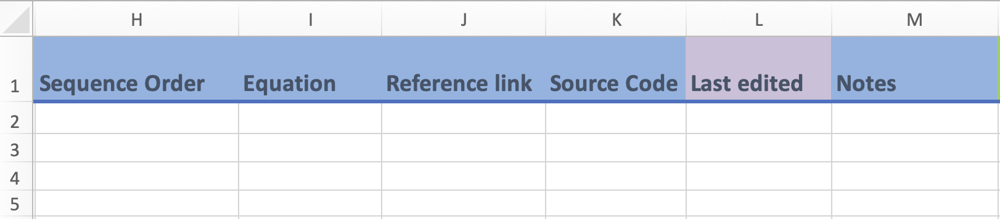
i) Columns H to K:
- These are free-text fields.
- `Sequence order` (column H) is an integer value to specify the position in the order sequence of a data treatment within the larger pipeline.
- `Equation` (column I) and `Source code` (column K) specify addition details about the data treatment, either in mathematical or coding notation. The source code may also be a web link.
- `Reference Link` (column J) is another external reference to details on a data treatment or pipeline.
ii) Columns L and M:
- `Last Edited` (column H) is a date field where you can enter the date when the entry was last updated. This field is used when you modify an entry after your initial recording. Leave this field blank if the measure was entered with no updates.
- `Notes` (column I) is for any extra comments or information.
Dataset template
- Columns A to H
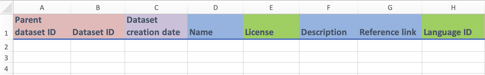
i) Columns A and B:
- These are identifier fields.
- `Dataset ID` (column B) is the unique identifier for this template, and cannot be repeated between entries. You can think of each value of `Dataset ID` as representing a unique dataset. This field can be any combination of letters or words up to 30 characters.
- For `Parent dataset ID` (column A), you can repeat the value between entries (if needed). For instance, if you are entering two different datasets that came from the same parent dataset, then the `Parent dataset ID` will be the same.
ii) Column C
- `Dataset creation date` (column C) is a date field where you can enter the date that the dataset was created.
iii) Columns D, F, and G:
- These are free form fields in which you can enter various information related to the dataset.
- `Name` (column D) and `Summary` (column G) are optional field to report more details or names on the dataset
- `Reference Link` (column F) points to an external link for additional information, or to another access point.
iv) Columns E and H:
- These are categorical input fields for reporting additional metadata on the dataset.
- `License` (column E) reports to usage rights of the dataset. For example, whether the dataset is open, or if it is entirely privileged information. A full list of possible license values can be found in the [`Data license set`](https://docs.phes-odm.org/sets.html#licSet).
- `Language ID` is the ISO-6393 code for the natural language in which the dataset was originally recorded. These values are pre-set and present in the [`languages` reference table](https://docs.phes-odm.org/parts.html#languages).- Columns I to O
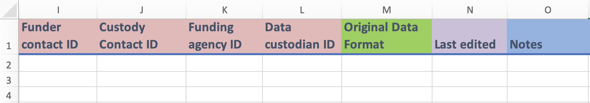
i) Columns I to L:
- These are identifier fields.
- For information regarding funders, you can enter their `Funder Contact ID` (which is a `Contact ID` created in the `Contact` template) and `Funding Agency` (which is a `Organization ID` created in the `Organization` template) in columns I and K.
- For information regarding Data Custodians, you can enter their `Custody Contact ID` (which is a `Contact ID` created in the `Contact` template) and `Data Custodian ID` (which is a `Organization ID` created in the `Organization` template) in columns J and L.
ii) Columns M, N and O:
- These are a categorical field (column M), date field (column N) and a free form field (column O) where you can enter in the indicated information.
- `Original data format` (column M) is used to report the original stucture or model used to record the data in this dataset. This is for datasets that have been mapped into the PHES-ODM to explain any structural odities resulting from the mapping process or differences in structure. The list of possible values for this field can be found in the [`Original Data Format Set`](https://docs.phes-odm.org/sets.html#ogFormSet).
- `Last edited` (column M) is the date when the entry was updated. This field is used when you modify an entry after your initial recording. Leave this field blank if the measure was entered with no updates.
- `Notes` (column O) is for any extra comments or information.Instrument template
- Columns A to G
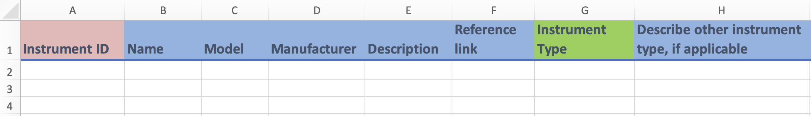
i) Columns A:
- This is the identifier field.
- `Instrument ID` (column A) is the unique identifier for this template, and cannot be repeated between entries. In essence, you can think of each `Instrument ID` value as representing a unique instrument. This field can be any combination of letters or words up to 30 characters.
ii) Columns B to F:
- These are free-text fields where you can enter the `Name` (column B), `Model` (column C) and `Manufacturer` (column D) of the instrument.
- A `Description` (coliumn E) and `Reference link` (column F) can also be provided.
iii) Columns G to H:
- `Instrument Type` (column G) is a categorical input to better describe the type of instrument being recorded here. A full break down of the categorical options can be found in the [`Instrument Set`](https://docs.phes-odm.org/sets.html#insTypeSet).
- `Describe other instrument type, if applcable` (column H) is a free text field to describe the nature of the instrument when the provided ennumeration options are insufficient.- Columns I to K
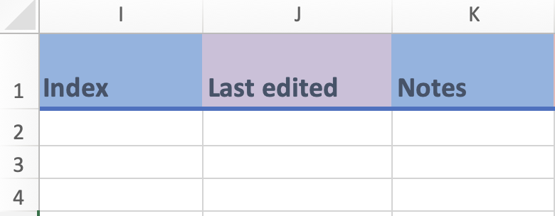
i) Columns I to K:
- Most of these fields are free form in which you can enter relevant information regarding your instrument
- You can use `Index` (column I) to differentiate two entries of data that are the same in the other fields.
- `Last Edited` (column J) is a date field where you can indicate the date when the entry was updated. This field is used when you modify an entry after your initial recording. Leave this field blank if the measure was entered with no updates.
- `Notes` (column K) is for any extra comments or information.Organization template
- Columns A to E
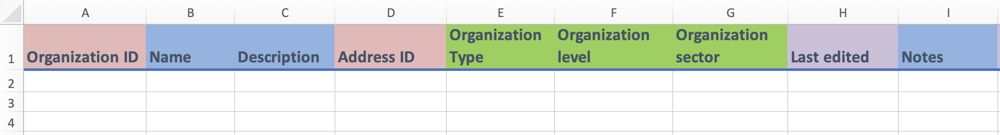
i) Columns A and D:
- These are identifier fields.
- `Organization ID` (column A) is the unique identifier for this template, and cannot be repeated between entries. You can think of each value of `Orgnization ID` as representing a unique organization. This field can be any combination of letters or words up to 30 characters.
- For `Address ID` (column D), you can repeat the value between entries (if needed). For instance, if you are entering two different organizations with the same address, then the `Address ID` will be the same.
- You may have already created some of the identifiers in other templates. For instance, you may have already created the `Address ID` in the `Address` template.
ii) Columns B and C:
- These columns are free form fields in which you can enter additional information regarding the organization.
iii) Columns E to G:
- These are fields with drop-down menus where you can select various characteristics of the organization that you are entering.
- For the possible categorical values for `Organization type` (column E), please see the [`Organization type set`](https://docs.phes-odm.org/sets.html#orgTypeSet).
- For the possible categorical values for `Organization level` (column F), please see the [`Organization level set`](https://docs.phes-odm.org/sets.html#orgLevelSet).
- For the possible categorical values for `Organization sector` (column G), please see the [`Organization sector set`](https://docs.phes-odm.org/sets.html#orgSectorSet).
iv) Columns H and I:
- These are a date field (column H) and a free form field (column I) where you can enter in the indicated information.
- `Last edited` (column H) is the date when the entry was updated. This field is used when you modify an entry after your initial recording. Leave this field blank if the measure was entered with no updates.
- `Notes` (column I) is for any extra comments or information.Polygon template
- Columns A to I
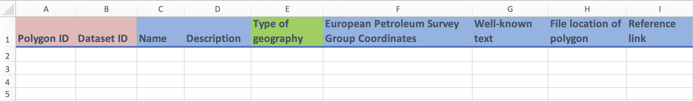
i) Columns A and B:
- These are identifier fields.
- `Polygon ID` (column A) is the unique identifier for this template, and cannot be repeated between entries. A polygon is something that describes the geometry of a geographic area. You can think of each value of `Polygon ID` as representing a unique polygon. This field can be any combination of letters or words up to 30 characters.
- For `Dataset ID` (column B), you can repeat the value between entries (if needed). For instance, if you are entering two different polygons from the same dataset, then this column will have the same value.
- You may have already created the `Dataset ID` in the `Dataset` template.
ii) Columns C to D, F to I:
- These are free form fields in which you can enter additional information regarding the Polygon.
- `Name` (column C) is the name of the polygon, and `Description` (column D) offers a description.
- `European Petroleum Survey Group Coordinates` (or EPSG coordinates) (column F) is a coordinate system that can be used to identify where a polygon is. While the `Well-Known Text` (column G) provides wkt (the text markup language that can be used to represent the polygon) information on the polygon.
- `File location of the polygon` (column H) and `Reference link` (column I) are similar in that both fields are used to point to location details for the polygon file. The file location may be a file path or URL, for the file that describes the geometry of the polygon. The reference link must be a URL, however, and may simply point to more general metadata on the polygon.
iii) Columns F:
- For `Type of geography` (column E) of the polygon, you can select one of the values from the drop-down menu.The possible values can be found in the [`Geographic set`](https://docs.phes-odm.org/sets.html#geoTypeSet).- Columns J to N
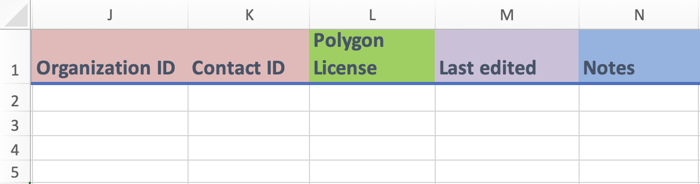
i) Columns J and K:
- These are identifier fields.
- `Organization ID` (column J) and `Contact ID` (column K) are for linking identities associated with the polygon.
ii) Column L:
- `Polygon license` (column L) is for specifying the usage rights of the polygon information. Many polygon files are protected information, so the field allows the usage rights to be specified.
iii) Columns M and N:
- `Last edited` (column M) is a date field where you can enter the date when the entry was last updated. This field is used when you modify an entry after your initial recording. Leave this field blank if the measure was entered with no updates.
- `Notes` (column N) is for any extra comments or information.Polygon Relationships template
- Columns A to E
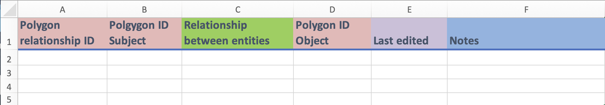
i) Columns A, B, and D:
- These are identifier fields.
- `Polygon relationship ID` (column A) is a unique identifier for each row of this table and cannot be repeated.
- `Polygon ID subject` (column B) and `Polygon ID object` (column D) reference rows in the polygons table. The table should be read as "`Polygon ID subject` is `relationship between entities` to `Polygon ID object`" to describe relationships between polygons.
ii) Column C:
- `relationship between entities` (column C) describes the actual relationship between polygons, with possible values for this feel being enumerated in the [`polygon relationsship set`](https://docs.phes-odm.org/sets.html#polyRelSet).
iii) Columns E to F:
- `Last edited` (column E) is a date field where you can enter the date when the entry was last updated. This field is used when you modify an entry after your initial recording. Leave this field blank if the measure was entered with no updates.
- `Notes` (column F) is for any extra comments or information.Public Helath Actions template
- Columns A to E
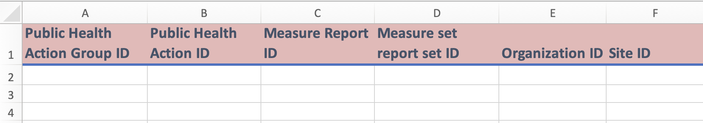
i) Columns A to F:
- These are identifier fields.
- `Public health action ID` (column B) is the unique identifier for each row in the table, and it does not repeat. It can, however, appear multiple times in the `Public health action group ID` (column A) as a way of group multiple actions into a single action group.
- `Measure Report ID` (column C) and `Measure set report ID` (column D) are used to link the public health action to a specifc measure or set of meausures.
- `Organization ID` (column E) links to the organization orchestrating the action (such as a public health department), while `site ID` (column F) records the site being targetted or affected by the action.- Columns G to N
i) Columns G to I:
- Thesee are categorical fields used to describe the nature and the target of the public health action.
- `Public health acction type` (column G) describes the high-level nature of the action (action types are listed in [`Public Health Action Type Value Set`](https://docs.phes-odm.org/sets.html#actionTypeSet)), while `public health action` (column H) provides slightly more detail (possible actions are listed in [`All Public Health Action Set`](https://docs.phes-odm.org/sets.html#allActionsSet)).
- `Public health thrat targetted by action` is exactly as it describes, and it takes measurement part types as its possible input values. A full like of these canbe found under [`measurements`](https://docs.phes-odm.org/sets.html#measurements)
ii) Columns J to L:
- These are all date fields.
- `Public health action datetime` (column J) specifies when the action was taken, while the `relevance start date` (column K) and `relevance end date` (column L), specify over what period the action will be or was active.
iii) Columns M to N:
- `Last edited` (column M) is a date field where you can enter the date when the entry was last updated. This field is used when you modify an entry after your initial recording. Leave this field blank if the measure was entered with no updates.
- `Notes` (column N) is for any extra comments or information.Quality reports template
- Columns A to H
i) Columns A to D:
- These are identifier fields.
- `Quality report ID` (column A) is the unique identifier for this template, and cannot be repeated between entries. You can think of each value of `Quality Report ID` as representing a unique quality issue that you want to report. This field can be any combination of letters or words up to 30 characters.
- For the rest of the columns, you can repeat the value between entries (if needed). For instance, if you are entering two different quality reports for the same sample, then the `Sample ID` column will be the same.
- You may have already created some of the identifiers in other templates. For instance, you may have already created the `Sample ID` in the `Sample report` template.
ii) Columns E and F:
- `Quality flag` (column E) is a drop-down menu field where you can select the type of quality issue that you would like to enter. Possible values can be found under [`Quality Indicators`](https://docs.phes-odm.org/sets.html#qualityIndicators).
- `Severity indicator` (column F) is is also a drop-down menu field where you can indicate the severity of the quality flag. Possible values for this field can be found in the [`Severity set`](https://docs.phes-odm.org/sets.html#sevSet).
iii) Columns G and H:
- These are a free form field and a date field in which you can enter the indicated information.
- `Last edited` (column G) is a date field where you can enter the date when the entry was last updated. This field is used when you modify an entry after your initial recording. Leave this field blank if the measure was entered with no updates.
- `Notes` (column H) is for any extra comments or information.Sites template
- Columns A to J
i) Columns A to D, and H to J:
- These are identifier fields.
- `Site ID` (column B) is the unique identifier for this template, and cannot be repeated between entries. You can think of each value of `Site ID` as representing a unique site. This field can be any combination of letters or words up to 30 characters.
- For the rest of the columns, you can repeat the value between entries (if needed). For instance, if you are entering two different sites that are found in the same polygon, then the `Polygon ID` values will be the same.
- `Parent site ID` (column A) refers to the site that is parent to the site that is being entered. For example if the site that is being entered is a room in a facility, then the `Parent site ID` would refer to the facility.
- `Address ID` (column H), `Organization ID` (column I), and `Contact ID` (column J) link out to the other tables to link data on the address of the site, the organization in charge, and who to contact about the site.
ii) Columns E to G:
- These are drop-down menu fields in which you can specify the `Site Type` (column E), the phsyical infrastructure where a sample is collected, and the type of `Sample shed` (column F), the social role of the location where the sample was collected.
- A list of site types can be found in the [`Site Set`](https://docs.phes-odm.org/sets.html#siteTypeSet), and the sheds can be found in the [`Sampleshed Set`](https://docs.phes-odm.org/sets.html#shedSet).
- The `Level of Aggregation of a Sampling Site` (column G) is a field to specifie the level of aggregation that occurs at the site - essentially, what size and type of region is represented by the base sewershed. This can be used to pool together or average results across similar sewersheds, and avoid trying to average different scales of sewershed together without a correction for size.
- Possible values for `Level of Aggregation of a Sampling Site` (column G) can be found in the [`Site Level Category Set`](https://docs.phes-odm.org/sets.html#siteLevelSet).- Columns K to T
i) Columns K, L, and O:
- These are all free form fields in which you can enter in relevant information about the site.
- `Name` (column K) and `Description` (column L) are for more internal details describing the site.
- `Health Region for Site` (column O) reports the health region, and should match how the region names itself in oublic documents to avoid confusion.
ii) Columns M and N:
- These are identifier fields that you can use to record additional information about the site. `Primary reporting authority ID` (column M) and `Secondary reporting authority ID` (column N) are `Organization ID`s that you would have created using the `Organization` template.
- These field differ from the `Organization ID` (column I) field in that these are for linking health or surveillance reporting authorities, rather than the organization managing the site.
iii) Columns P to R:
- These are free form fields where you can enter in additional information about the Site.
- `European Petroleum Survey Group Coordinates` (column Q) is a coordinate system that can be used to identify where your site is, along with the geographic `Latitude` (column P) and `Longitude` (column Q) points.
iv) Columns S to T:
- `Last Edited` (column S) is a date field where you can enter the date when the entry was last updated. This field is used when you modify an entry after your initial recording. Leave this field blank if the measure was entered with no updates.
- `Notes` (column T) is for any extra comments or information.You have now entered in your metadata, congratulations!